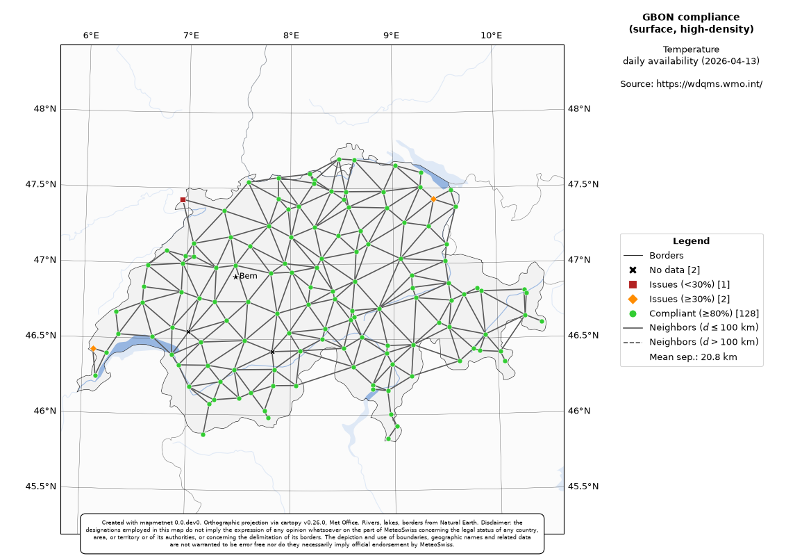

Network maps#
GBON network maps#
The mapmetnet.mapper module primary goal is to assemble fully-fledged GBON compliance network
maps, as illustrated in the following example:
from mapmetnet.mapper import GBONMapper
che_map = GBONMapper('CHE', mrgid=None)
che_map.generate_map(figid=1,
pad_frac=0.025,
station_type='surface',
var_name='temperature',
interval='daily',
category='availability',
date='2026-04-13',
high_density=True,
show=True)
(Source code, png, hires.png, pdf)
{kind=link}
{kind=link}

For more information on the different parameters of the resulting map, users can refer to the
documentation of the mapmetnet.mapper.GBONMapper.generate_map() method.
- generate_map(self, figid: int = 1, pad_frac: float = 0.2, background: str | None = None, station_type: str = 'surface', var_name: str = 'temperature', interval: str = 'monthly', category: str = 'availability', date: str = '2026-01', wigos_ids: str | list | None = None, show_influence_area: bool = False, high_density: bool = False, show_country_names: bool = False, ref_radius: float | int | None = None, save_fmts: str | list | None = None, show: bool = False) str | None
All-in-one routine to generate a fully-fledged GBON Country map.
- Parameters:
figid (int, optional) – the matplotlib figure ID. Will first close it if it already exists.
pad_frac (float, optional) – padding fraction around the edges. Defaults to 0.1 (=10%).
background (str, None) – map background. See
Mapper._add_background()for supported options. Defaults to None.station_type (str) – either ‘surface’ or ‘upper-air’.
var_name (str) – name of variable, e.g. ‘Temperature’.
interval (str, optional) – assessment interval, i.e. one of [‘monthly’, ‘daily’, ‘six_hour’]. Defaults to ‘monthly’.
category (str, optional) – WDQMS category to query. Defaults to ‘availability’.
date (str, optional) – date of the availability assessment. Defaults to ‘2023-11’.
wigos_ids (list, optional) – Defaults to None. If specified, will be combined with the country code using OR to select stations to be drawn.
show_influence_area (bool, optional) – if True, will draw the baseline influence area of the network. Defaults to False.
high_density (bool, optional) – if True, will use the GBON high-density (a.k.a “should”) criteria for deriving the area of influence of stations.
show_country_names (bool, optional) – if True, will draw the names of countries on the map. Defaults to False.
ref_radius (int|float, optional) – if set, will draw a circle of ‘ref_radius’ km in radius around the capital.
save_fmts (str|list, optional) – a str or list of str of formats to save the map to, e.g. [‘pdf’, ‘png’]. Defaults to None (= no figure saved).
show (bool, optional) – if True, will call plt.show() at the end. Defaults to False.
- Returns:
the filename of the saved figure, if save_fmts was not None. Otherwise, None.
- Return type:
str
Custom network maps#
Fig. 1: Inheritance diagram for the GBONMapper class#